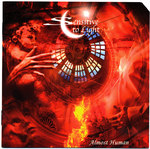

| Artist: | Sensitive to Light |
| Title: | Almost Human |
| Label: | Cyclops CYCL 156 |
| Length(s): | 66 minutes |
| Year(s) of release: | 2006 |
| Month of review: | [07/2008] |
| 1) | Dreams Are Coming True Tonight 1.54 | |
| 2) | Birth 12.01 | |
| 3) | Something Happened In The Garden Of Eden 10.22 | |
| 4) | Carpe Diem 6.06 | |
| 5) | Kyrie [Gepetto's Death] 7.15 | |
| 6) | Snow 6.13 | |
| 7) | Travels 3.28 | |
| 8) | Father [The Truth] 8.36 | |
| 9) | Memories 2.15 |
Bonus Track
| 10) | Why? 7.51 |
The album tells the story of a grown up Pinocchio, facing the questions of life. Nice to see that a story was chosen we hadn't heard umpteen times before. Even though Saens was quite fond of using concepts for album subjects as well, the tracks on this album are more closely knit, into pretty much a rock opera. In fact, the nine tracks of the album itself are actually the nine parts of the one song on the album, Pinocchio. The guitar is not as prominent as it is in Saens material, having the competition of the keys. Surprisingly, there is a tearing sax at times too, which is an addition that works quite well, in my opinion. It also helps in creating a somewhat more romantic sound.
One of the downsides -at least in my opinion- of rock operas and concept albums is that the songs are structured to tell a story, which at times gets in the way of melodic interest. Even though the sacrifices on that altar are limited on this album, there are such. Another thing, which can be found on Saens albums as well, is that the compositions at times seem to trip over themselves, get ahead of themselves. This has a negative effect on the coherence of songs in which it occurs. Again, not a great problem, but it's there.
Vocalist Jenny Lewis is presented as a great promise, or asset in the promo sheet. Even though I find her to be very able and well up to the task presented her on this album, I can't say that I feel she takes the music to another level. She's plain good. Quite ironically the layered vocals of the bonus track are the best show case of the vocal talents present in the band, which aren't necessarily Jenny's.
The album sounds very full, no opportunity for throwing in a fill, riff or keyboard carpet is passed over. This can't hide away, though, that so many things about this album are just plain good -in the sense of sufficient- without ever excelling. Never am I taken in, the music seems to pass me by just a little too much, although Kyrie has a good try at it. But one song can't carry a full album.